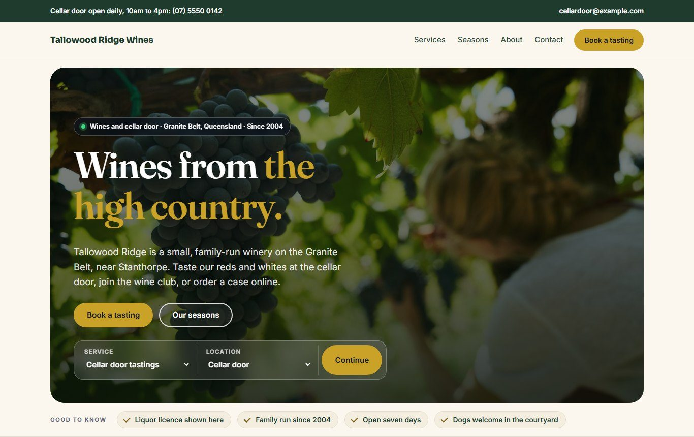
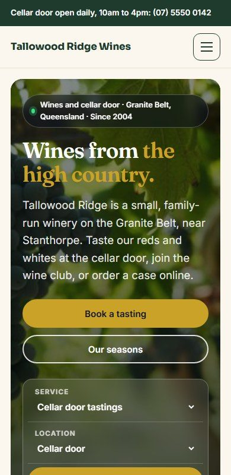

Home / Agriculture and produce
Demo buildWinery and cellar door website
Tallowood Ridge Wines is a made-up business. We built this site to show what we do. It is not a real business or a client's site.
The facts.
- Business
- Tallowood Ridge Wines (fictional)
- Industry
- Agriculture and produce
- Layout
- Warm and friendly
- Pages
- 5
- Colours
- #1f3b2d#c9a227
- Works offline
- Yes
- Built from
- Our design system, tailored to the business
The home page, on two screens.


The problem.
Visitors, buyers and seasonal workers all look a winery up on a phone.
Each one wants something different.
Without a clear next step for each, they move on.
What we built.
Tap each one to see why it matters and how we build it.
Cellar door and bookingsOpening hours, tastings and functions, with a booking or enquiry button.
Why it matters
Opening hours, tastings and functions, with a booking or enquiry button.
How we build it
Opening hours in the top bar, and a booking or enquiry button on every page.
Sell onlineA wine club or online shop linked from every page.
Why it matters
A wine club or online shop linked from every page.
How we build it
A clear Shop or Wine club button in the menu, linked to the shop system you already use.
Wholesale enquiriesA simple path for buyers, packers and markets.
Why it matters
A simple path for buyers, packers and markets.
How we build it
A separate enquiry form for trade buyers, so it never mixes with visitor questions.
Seasonal workA harvest jobs page that fills itself with applications.
Why it matters
A harvest jobs page that fills itself with applications.
How we build it
A Harvest jobs page with dates, pay and an apply form that works on a phone.
Ready to see your three designs?
The brief takes about ten minutes.